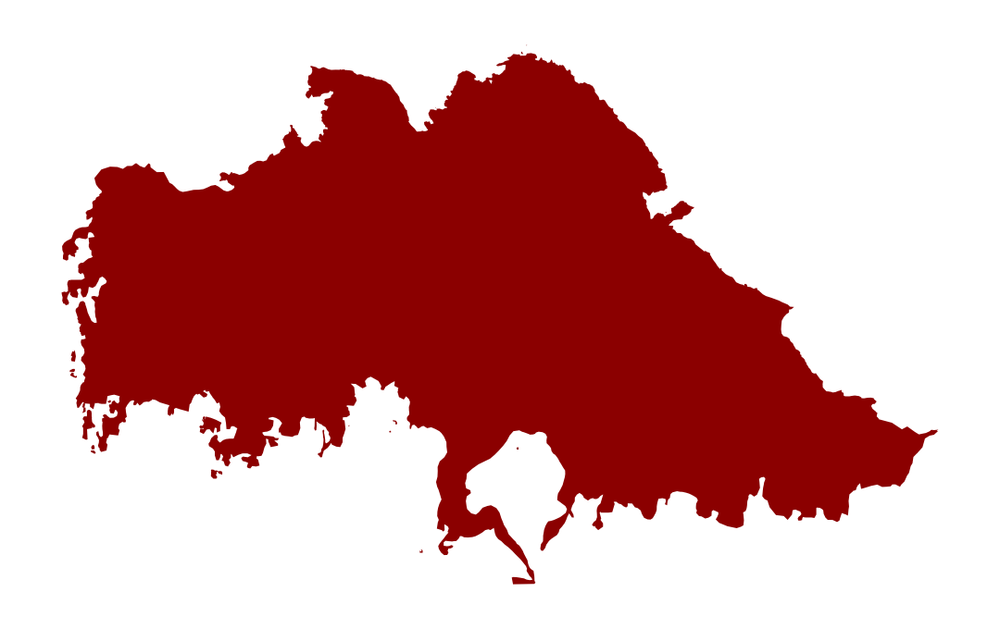
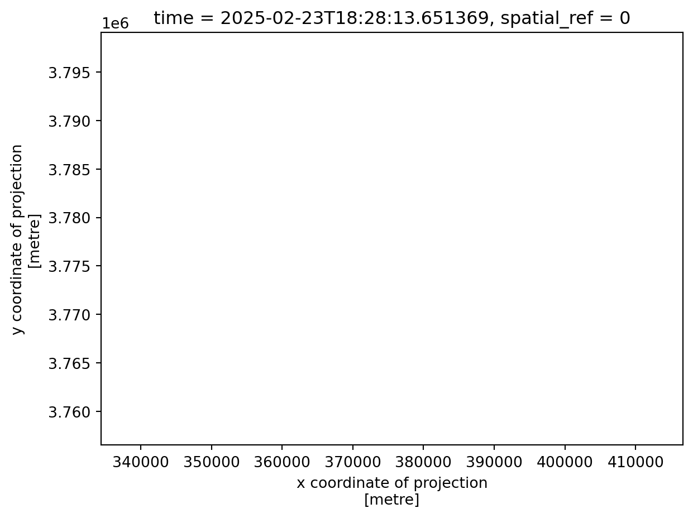
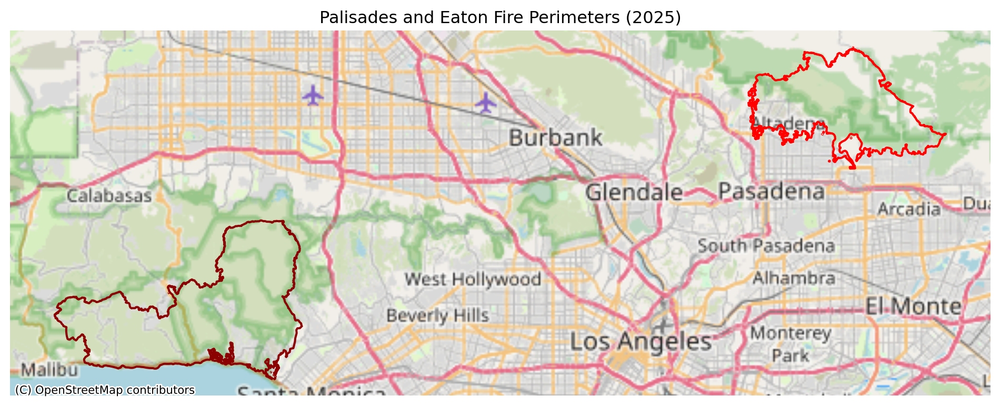

![]()
# Load packages
import os
import pandas as pd
import numpy as np
import geopandas as gpd
import xarray as xr
import rioxarray
import contextily as ctx
import matplotlib.pyplot as pltIn this blog, a false color image is created using Landsat remote sensing and fire perimeter data to highlight the locations of the Palisades Fire and Eaton Fire in Los Angeles County, California that occurred in early January 2025.
Analysis highlights:
- Geospatial data exploration and wrangling with
geopandas - NetCDF data exploration and wrangling with
xarrayandrioxarray - Creation of true color and false color images using Landsat bands
- Mapping of vector and raster data and customization with
matplotlib
About the data:
In this notebook we use two datasets:
1) Fire perimeter data
The data used to map the fire perimeters were retrieved as two shapefiles from the City of Los Angeles GeoHub. The layers contained dissolved fire perimeters in the form of polygons for the Eaton and Palisades fires. Each layer contained columns with an OBJECTID, type (Heat Perimeter), shape area and shape length, and a geometry column.
2) Landsat 8 satellite data
Landsat Collection 2 Level-2 atmospherically corrected surface reflectance data collected by the Landsat 8 satellite was used for this analysis, retrieved as a simplified collection of bands from the Microsoft Planetary Computer data catalogue. This data was then clipped to the area of interest surrounding the fire perimeters and used in the form of a NetCDF with the red, green, blue, near-infrared and shortwave infrared bands as variables.
References:
City of Los Angeles. (2025). Palisades and Eaton Dissolved Fire Perimeters (2025) [GIS shapefiles]. Los Angeles GeoHub. Accessed November 20, 2025, from https://geohub.lacity.org/maps/ad51845ea5fb4eb483bc2a7c38b2370c/about
Microsoft Planetary Computer. (n.d.). Landsat Collection 2 Level‑2 [Dataset]. Microsoft. Accessed November 20, 2025, from https://planetarycomputer.microsoft.com/dataset/landsat-c2-l2
1. Fire perimeter data exploration
# Import Palisades fire perimeter shapefile
fp = os.path.join('data', 'Palisades_Perimeter_20250121', 'Palisades_Perimeter_20250121.shp')
palisades_fire = gpd.read_file(fp)
# Import Eaton fire perimeter shapefile
fp = os.path.join('data', 'Eaton_Perimeter_20250121', 'Eaton_Perimeter_20250121.shp')
eaton_fire = gpd.read_file(fp)# Display first few rows of Palisades fire data
palisades_fire.head()| OBJECTID | type | Shape__Are | Shape__Len | geometry | |
|---|---|---|---|---|---|
| 0 | 1 | Heat Perimeter | 1182.082031 | 267.101144 | POLYGON ((-13193543.302 4032913.077, -13193543... |
| 1 | 2 | Heat Perimeter | 2222.488281 | 185.498783 | POLYGON ((-13193524.155 4033067.953, -13193524... |
| 2 | 3 | Heat Perimeter | 21.011719 | 22.412814 | POLYGON ((-13193598.085 4033158.222, -13193598... |
| 3 | 4 | Heat Perimeter | 214.992188 | 76.639180 | POLYGON ((-13193654.249 4033146.033, -13193656... |
| 4 | 5 | Heat Perimeter | 44203.453125 | 1569.259764 | POLYGON ((-13194209.580 4033236.320, -13194209... |
# Visualize fire perimeter
palisades_fire.plot(color = "darkred")
plt.axis("off")
plt.show()
# Display first few rows of Eaton fire data
eaton_fire.head()| OBJECTID | type | Shape__Are | Shape__Len | geometry | |
|---|---|---|---|---|---|
| 0 | 1 | Heat Perimeter | 2206.265625 | 270.199719 | POLYGON ((-13146936.686 4051222.067, -13146932... |
| 1 | 2 | Heat Perimeter | 20710.207031 | 839.204218 | POLYGON ((-13150835.463 4052713.929, -13150831... |
| 2 | 3 | Heat Perimeter | 3639.238281 | 250.304502 | POLYGON ((-13153094.697 4053057.596, -13153113... |
| 3 | 4 | Heat Perimeter | 1464.550781 | 148.106792 | POLYGON ((-13145097.740 4053118.235, -13145100... |
| 4 | 5 | Heat Perimeter | 4132.753906 | 247.960744 | POLYGON ((-13153131.126 4053196.882, -13153131... |
# Visualize fire perimeter
eaton_fire.plot(color = "darkred")
plt.axis("off")
plt.show()
# Check the CRS
palisades_fire.crs<Projected CRS: EPSG:3857>
Name: WGS 84 / Pseudo-Mercator
Axis Info [cartesian]:
- X[east]: Easting (metre)
- Y[north]: Northing (metre)
Area of Use:
- name: World between 85.06°S and 85.06°N.
- bounds: (-180.0, -85.06, 180.0, 85.06)
Coordinate Operation:
- name: Popular Visualisation Pseudo-Mercator
- method: Popular Visualisation Pseudo Mercator
Datum: World Geodetic System 1984 ensemble
- Ellipsoid: WGS 84
- Prime Meridian: Greenwich# Examine CRS details
print('Ellipsoid:', palisades_fire.crs.ellipsoid)
print('Datum:', palisades_fire.crs.datum)
print('Is geographic?:', palisades_fire.crs.is_geographic)
print('Is projected?:', palisades_fire.crs.is_projected)Ellipsoid: WGS 84
Datum: World Geodetic System 1984 ensemble
Is geographic?: False
Is projected?: True# Check that the CRS is the same for both fire perimeter data sets
palisades_fire.crs == eaton_fire.crsTrueBased on our preliminary exploration, the fire perimeter data is made up of polygons when looking at the geometry column. Both the Palisades and Eaton fire perimeter data have the same projected CRS, WGS 84.
2. NetCDF data import and exploration
# Import Landsat data as xarray.Dataset
fp = os.path.join('data', 'landsat8-2025-02-23-palisades-eaton.nc')
landsat = xr.open_dataset(fp)# Explore dimensions, coordinates and data variables of Landsat data
landsat<xarray.Dataset> Size: 78MB
Dimensions: (y: 1418, x: 2742)
Coordinates:
* y (y) float64 11kB 3.799e+06 3.799e+06 ... 3.757e+06 3.757e+06
* x (x) float64 22kB 3.344e+05 3.344e+05 ... 4.166e+05 4.166e+05
time datetime64[ns] 8B ...
Data variables:
red (y, x) float32 16MB ...
green (y, x) float32 16MB ...
blue (y, x) float32 16MB ...
nir08 (y, x) float32 16MB ...
swir22 (y, x) float32 16MB ...
spatial_ref int64 8B ...# Check the dimensions of the dataset
landsat.dimsFrozenMappingWarningOnValuesAccess({'y': 1418, 'x': 2742})# Check the attributes of the red variable
landsat.red.attrs{'grid_mapping': 'spatial_ref'}# Check the attributes of the spatial_ref variable
landsat.spatial_ref.attrs{'crs_wkt': 'PROJCS["WGS 84 / UTM zone 11N",GEOGCS["WGS 84",DATUM["WGS_1984",SPHEROID["WGS 84",6378137,298.257223563,AUTHORITY["EPSG","7030"]],AUTHORITY["EPSG","6326"]],PRIMEM["Greenwich",0,AUTHORITY["EPSG","8901"]],UNIT["degree",0.0174532925199433,AUTHORITY["EPSG","9122"]],AUTHORITY["EPSG","4326"]],PROJECTION["Transverse_Mercator"],PARAMETER["latitude_of_origin",0],PARAMETER["central_meridian",-117],PARAMETER["scale_factor",0.9996],PARAMETER["false_easting",500000],PARAMETER["false_northing",0],UNIT["metre",1,AUTHORITY["EPSG","9001"]],AXIS["Easting",EAST],AXIS["Northing",NORTH],AUTHORITY["EPSG","32611"]]',
'semi_major_axis': 6378137.0,
'semi_minor_axis': 6356752.314245179,
'inverse_flattening': 298.257223563,
'reference_ellipsoid_name': 'WGS 84',
'longitude_of_prime_meridian': 0.0,
'prime_meridian_name': 'Greenwich',
'geographic_crs_name': 'WGS 84',
'horizontal_datum_name': 'World Geodetic System 1984',
'projected_crs_name': 'WGS 84 / UTM zone 11N',
'grid_mapping_name': 'transverse_mercator',
'latitude_of_projection_origin': 0.0,
'longitude_of_central_meridian': -117.0,
'false_easting': 500000.0,
'false_northing': 0.0,
'scale_factor_at_central_meridian': 0.9996,
'spatial_ref': 'PROJCS["WGS 84 / UTM zone 11N",GEOGCS["WGS 84",DATUM["WGS_1984",SPHEROID["WGS 84",6378137,298.257223563,AUTHORITY["EPSG","7030"]],AUTHORITY["EPSG","6326"]],PRIMEM["Greenwich",0,AUTHORITY["EPSG","8901"]],UNIT["degree",0.0174532925199433,AUTHORITY["EPSG","9122"]],AUTHORITY["EPSG","4326"]],PROJECTION["Transverse_Mercator"],PARAMETER["latitude_of_origin",0],PARAMETER["central_meridian",-117],PARAMETER["scale_factor",0.9996],PARAMETER["false_easting",500000],PARAMETER["false_northing",0],UNIT["metre",1,AUTHORITY["EPSG","9001"]],AXIS["Easting",EAST],AXIS["Northing",NORTH],AUTHORITY["EPSG","32611"]]',
'GeoTransform': '334395.0 30.0 0.0 3799065.0 0.0 -30.0'}When looking at the landsat xarray.Dataset, we can see that the coordinates include x, y, time, and spatial_ref. The data variables are red, green, blue, nir08, and swir22. When checking the dimensions of the dataset, we see that there are 1418 pixels in the y direction and 2742 pixels in the x direction, which makes up each data variable/band (red, green, blue, etc.). The attributes of the red variable included a spatial_ref. The other data variables contain the same attribute. There were many coordinate attributes for spatial_ref, including crs_wkt which tells us that the CRS should be EPSG 32611.
3. Restoring geospatial information
After exploring our data, we need to restore the geospatial information to the landsat xarray.Dataset and ensure that the coordinate reference systems for the fire perimeter data and landsat data match before performing further analyses.
# Check CRS of landsat data
print(landsat.rio.crs)Nonelandsat is not yet a geospatial object, but contains a CRS to apply.
# Print the CRS contained in the crs_wkt attribute of the spatial_ref variable
print(landsat.spatial_ref.crs_wkt)PROJCS["WGS 84 / UTM zone 11N",GEOGCS["WGS 84",DATUM["WGS_1984",SPHEROID["WGS 84",6378137,298.257223563,AUTHORITY["EPSG","7030"]],AUTHORITY["EPSG","6326"]],PRIMEM["Greenwich",0,AUTHORITY["EPSG","8901"]],UNIT["degree",0.0174532925199433,AUTHORITY["EPSG","9122"]],AUTHORITY["EPSG","4326"]],PROJECTION["Transverse_Mercator"],PARAMETER["latitude_of_origin",0],PARAMETER["central_meridian",-117],PARAMETER["scale_factor",0.9996],PARAMETER["false_easting",500000],PARAMETER["false_northing",0],UNIT["metre",1,AUTHORITY["EPSG","9001"]],AXIS["Easting",EAST],AXIS["Northing",NORTH],AUTHORITY["EPSG","32611"]]# Recover geospatial information by setting CRS on landsat xarray.Dataset
landsat.rio.write_crs(32611, inplace=True)
landsat.rio.crsCRS.from_wkt('PROJCS["WGS 84 / UTM zone 11N",GEOGCS["WGS 84",DATUM["WGS_1984",SPHEROID["WGS 84",6378137,298.257223563,AUTHORITY["EPSG","7030"]],AUTHORITY["EPSG","6326"]],PRIMEM["Greenwich",0,AUTHORITY["EPSG","8901"]],UNIT["degree",0.0174532925199433,AUTHORITY["EPSG","9122"]],AUTHORITY["EPSG","4326"]],PROJECTION["Transverse_Mercator"],PARAMETER["latitude_of_origin",0],PARAMETER["central_meridian",-117],PARAMETER["scale_factor",0.9996],PARAMETER["false_easting",500000],PARAMETER["false_northing",0],UNIT["metre",1,AUTHORITY["EPSG","9001"]],AXIS["Easting",EAST],AXIS["Northing",NORTH],AUTHORITY["EPSG","32611"]]')# Reproject fire perimeter data to Landsat CRS
palisades_fire = palisades_fire.to_crs(landsat.rio.crs)
eaton_fire = eaton_fire.to_crs(landsat.rio.crs)
# Confirm changes
assert palisades_fire.crs == landsat.rio.crs
assert eaton_fire.crs == landsat.rio.crs4. True color image
The next step is to create a true color (RBG) image using our landsat variables. In a true color image, the red, green, and blue RS bands are displayed in the red, green, blue channels, respectively.
# Create RBG image with landsat variables
landsat[['red', 'green', 'blue']].to_array().plot.imshow()Clipping input data to the valid range for imshow with RGB data ([0..1] for floats or [0..255] for integers)./opt/anaconda3/envs/eds220-env/lib/python3.11/site-packages/matplotlib/cm.py:478: RuntimeWarning: invalid value encountered in cast
xx = (xx * 255).astype(np.uint8)
# Identify which bands have NaN values using a list of the bands
for band in ['red', 'green', 'blue', 'nir08', 'swir22']:
count = np.isnan(landsat[band].values).sum()
print(f"There are {count} NaN values in the {band} band.")There are 0 NaN values in the red band.
There are 1 NaN values in the green band.
There are 109 NaN values in the blue band.
There are 0 NaN values in the nir08 band.
There are 0 NaN values in the swir22 band.# Correct image with substituted NaN values and adjusted scales
landsat[['red', 'green', 'blue']].to_array().fillna(0).plot.imshow(robust = True)
plt.show()
In the first image, errors are encountered and nothing appears to be plotted due to the scale of the data and NaN values not being the correct type. Using robust = True uses 2nd and 98th percentiles of data instead of absolute min and max to avoid extreme outliers like clouds to make the image visible, correcting the scale and clipping range issue. Filling the NaN values (found mostly in the blue band) with 0 allows the values to be correctly cast and plotted. The final true color image shows a visible range of the band values.
5. False color image
Next, we want to plot a preliminary false color image using the short-wave infrared (swir22), near-infrared, and red variables mapped to the red, green, and blue channels respectively. This allows us to see non-visible wavelenghts and better show aspects of our environment like burn severity.
# Create false color image
landsat[['swir22', 'nir08', 'red']].to_array().fillna(0).plot.imshow(robust = True)
plt.show()
6. Map
Lastly, we want to combine all of our data into a visualization of false color fire scars and the original fire perimeters using matplotlib.
# Create map
fig, ax = plt.subplots(figsize = (10,8))
# Add false color image
landsat[['swir22', 'nir08', 'red']].to_array().fillna(0).plot.imshow(ax=ax, robust = True)
# Add fire perimeters
palisades_fire.plot(ax=ax,
color = "none",
edgecolor = "darkred",
linewidth = 1.2)
eaton_fire.plot(ax=ax,
color = "none",
edgecolor = "darkred",
linewidth = 1.2)
# Title
ax.set_title("False Color Image of Palisades and Eaton Fires, \n Los Angeles County (2025)",
size = 13)
# Remove axes ticks
ax.set_xticks([])
ax.set_yticks([])
# Remove axes labels
ax.set_xlabel("")
ax.set_ylabel("")
# Add fire names as text annotations
ax.text(palisades_fire.geometry.centroid.iloc[0].x - 6000,
palisades_fire.geometry.centroid.iloc[0].y + 9000,
"Palisades Fire",
color = "white",
fontsize = 8,
ha = 'right',
bbox = dict(facecolor='black', alpha=0.8, edgecolor='none', pad=2, boxstyle= "round, pad=0.3"))
ax.text(eaton_fire.geometry.centroid.iloc[0].x - 1000,
eaton_fire.geometry.centroid.iloc[0].y - 1000,
"Eaton Fire",
color = 'white',
fontsize = 8,
ha = 'right',
bbox = dict(facecolor='black', alpha=0.8, edgecolor='none', pad=2, boxstyle= "round, pad=0.3"))
# Add figure caption
plt.figtext(0.12, 0.13, " This false color image highlights the fire scars of the Palisades and Eaton Fires in Los Angeles County, California in early January \n 2025. Assigning SWIR, NIR, and red bands to visible colors helps to increase the visibility of the effects of the fires, such as burn \n severity and vegetation health compared to surrounding areas.\n \n Data Sources: City of Los Angeles GeoHub and Microsoft Planetary Computer \n Accessed Nov. 20, 2025", fontsize = 8.5)
plt.show()
Conclusion
In this analysis, we were able to process data in the form of shapefiles and a NetCDF in order to create a false color image showing fire burn scars. The Palisades and Eaton Fires clearly had an effect on the environment shown in our map, as these red areas contrast with the surrounding green.
Citation
BibTeX citation:
@online{robillard2025,
author = {Robillard, Ava},
title = {EDS 220: {Eaton} and {Palisades} {Fires}},
date = {2025-12-01},
url = {https://avarobillard.github.io/posts/2025-12-01-eds220},
langid = {en}
}
For attribution, please cite this work as:
Robillard, Ava. 2025. “EDS 220: Eaton and Palisades Fires.”
December 1, 2025. https://avarobillard.github.io/posts/2025-12-01-eds220.
Social dimensions of Eaton and Palisades fires
1. Metadata exploration
Variables in EJI data that could influence a community’s response to a wildfire: - Percentile rank of persons without internet - …
5 rows × 174 columns
5 rows × 179 columns
3. Polygon clipping
Clip census tracts to palisades and eaton fire perimeter using
geopandas.clip()4. Visualize fire perimeters with a basemap

5. Visualize EJI data